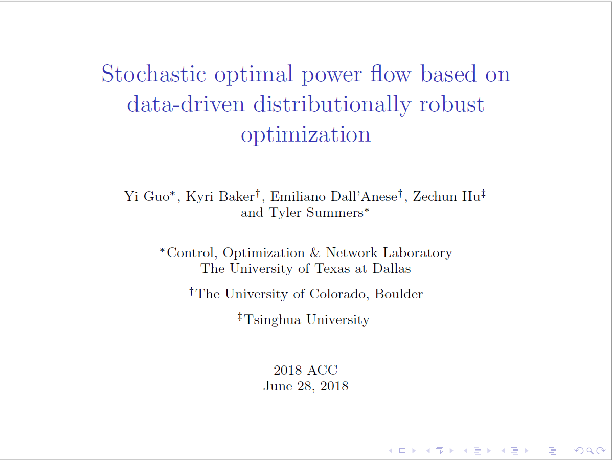

Chengda Ji
About Chengda JiChengda Ji graduated from a joint program and received his Bachelor of Engineering and Bachelor of Science degrees in Mechanical Engineering from Beijing Institute of Technology, China, and Polytechnic University of Turin, Italy, respectively, in 2016. He then joined the Department of Mechanical Engineering at Johns Hopkins University as a research assistant with Professor Dennice Gayme as his Ph.D. advisor. His research interests include modeling, dynamics, and control of networked systems, e.g., power systems, vehicle platoons, and computer networks. His current research focuses on developing distributed control and learning frameworks for networked systems. Chengda was awarded the Johns Hopkins Graduate Fellowship (2017) and CSC Undergraduate Fellowship (2015). Recent talksData-based Stochastic OPF |